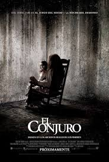

Home
Estrenos
Generos
Recomendadas
Series
Películas Recomendadas para Ver en tu Vida (por Género)
Aventura
Cómicas
Terror
Acción
Romanticas
Fantasia
El exorcista
Posesión infernal
El conjuro

Película basada en un caso real ocurrido en 1949 y que supuso un antes y un después en las películas de terror donde una joven de doce años es poseída por un demonio. Tras este hecho, la familia se ve recurrida a llamar liberarla a un exorcista que pueda ayudarles en la tarea de y hacer que dicho ente desaparezca.
Un grupo de jóvenes deciden acudir a una cabaña de campo para desintoxicar a uno de sus amigos de su adicción a las drogas. El problema aparece cuando uno de ellos se encuentra un extraño libro que lee en voz alta para desatar a un terrible espíritu que mora en el bosque.
Historia que cuenta unos extraños sucesos que sufrieron en los 70 la familia Perron. Diferentes exorcistas y expertos en hechos paranormales de todo el mundo acudieron a la casa rural en la que residían para intentar comprender el porqué de tan extraños actos.